，因为有持续性的阶段，在这些阶段上，正面朝上的数量与反面朝上的数量是相等的；但从来都没有这样的点，在这些点上，反面朝上的数量多于正面朝上的数量。这种波动确实
变得有点小了，但随着n
接近无限，高点也只是接近于
，因为有持续性的阶段，在这些阶段上，正面朝上的数量与反面朝上的数量是相等的；但从来都没有这样的点，在这些点上，反面朝上的数量多于正面朝上的数量。这种波动确实
变得有点小了，但随着n
接近无限，高点也只是接近于 。（如果你使用计算器的话，你就能够看到，
。（如果你使用计算器的话，你就能够看到，中译本边码：91
在本书开头，我们考察了基于信息的方案与基于世界的方案之间的差别。而且从那时起，我们的关注点就在前者上面了。但我们已经看到，它们遭遇到了一些困难，特别是在我们试图解释为什么有些事情会发生或者容易发生的时候。赌场赚钱，几乎从不失手。（由于这个原因，我已经在香港股票市场买了澳门赌场的股票。）但是，我们如何能够根据信息，例如根据赌徒与赌场运营者的（合理）置信度来解释这一点呢？可以肯定，人们是否相信赌场游戏是公平的，与它们是否就是 公平的没有关系。
中译本边码：92
如果你需要被说服，那就设想全世界的赌场都开始经常性地输钱给赌徒。直觉上，我们会把这归因于“运气”。但是，如果这样的事情继续发生，情况会怎么样呢？接下来我们会怀疑赌徒是在作弊。如果我们后来通过调查发现并不存在有计划的作弊行为，情况又会怎么样呢？我们还会让赢得任一单一类型游戏（例如黑杰克扑克游戏）的概率保持相同的估算吗？不会。我们会对概率进行调整。
正如我们前面所看到的，那些认为只存在基于信息的概率的人总是可以坚持认为，若改变我们对概率的估算，只能 是因为手上的信息——关于赌场当中游戏的结果等等的信息——发生了变化。但赞成基于世界的概率的人，却可以通过修改这个思想实验做出回应。设想一个不存在任何信徒（believer）的赌场。游戏是自动的。进行赌博的是机器人。这里就不存在关于这些游戏是否公平这样的事实问题了吗？即使在这个宇宙当中没有剩下任何一个信徒，还会存在赢得其中任一局的概率吗？“是的”似乎是一个合理的回答。（即便是现在，也有买和卖股票的计算机程序。因此，同这个假定场景相类似的东西在未来可能会发生。设想我们将要建立这个赌场，以至于这些机器人能够代表他们的主人进行赌博，但后来其主人因为一场恶性的瘟疫彻底灭绝了。）
中译本边码：93
根据基于世界的观点，概率就存在于这个物理世界当中，它就“在那里”。概率的存在不依赖于我们，也不依赖于命题或者语言。但似乎由此可以推出：我们只有通过经验才能把握到它们的存在以及它们的值。但是，我们究竟应该把这些基于世界的概率理解成什么呢？
我们在这一章中要考虑的所有回答，都基于下面这个思想：概率涉及的是事物的群体，或者说集合体 。正如科学家和数学家理查德·冯·米泽斯（Richard von Mises 1928： 18）所说：“首先是集合体，然后才是概率。 ”而且，既然我们正在处理基于世界的 概率，那么，首先来考虑基于世界的 事物的群体，也就是经验集合体 ，似乎就是明智的。这样的集合体不但能够包含“聚集现象”（mass phenomena），而且还能够包含重复性事件，也就是这样的情况：“或者相同事件不断重复发生，或者大量相同的元素在相同时间内出现。”（von Mises 1928： 12）
出生至今的兔子的集合体就是一个这样的集合体。它是有限的。比如，我们就说它有n 个成员。涉及这个集合体的概率是什么？一种观点认为，这个概率只取决于其中的兔子的特征 ，例如颜色和大小，还取决于这些特征 在这个集合体当中的频率。我们把“一只兔子是黑色的”看作一个恰当的例子。如果这个集合体的n 只兔子当中有m 只是黑色的，那么它的概率就是
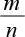
。这刚好就是黑色兔子（在所有存在的兔子当中）的实际相对频率 。显然，这个值不能小于0，也不能大于1。而且很容易看到，如果m 只兔子是黑色的，那么n －m 只兔子就不是黑色的，因此非黑兔子的实际相对频率就是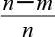
，它等于1－ 。另外，黑兔子或者 非黑兔子的实际相对频率是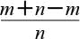
，也就是1。因此，这些实际相对频率满足第一条和第三条概率公理（附录A当中所讨论的两条公理）。通过相同的考虑，我们可以表明其他的概率公理也可以得到满足。（设想我想得到带毛 的黑兔子的相对频率。我们可以把黑兔子的相对频率与黑兔子当中那些 带毛兔子的相对频率相乘。例如，兔子当中一半是黑色的，而黑兔子当中一半是带毛的。由此可得，这个兔子的集合体当中有四分之一既是带毛的又是黑色的。）中译本边码：94
这个时候注意到下面这一点是很重要的：在这个例子中，一只 兔子是黑色的概率与下一只 要出生的兔子将会是黑色的概率，没有任何关系。这样一只兔子并不是 我们开始提到的集合体的一部分。你也许会认为有一种容易的方法可以纠正这一点。或者我们还可以考虑到目前为止出生的所有兔子的集合体，再加上 下一只即将出生的兔子。没错。但这还是不能给出“下一只将要出生的兔子是黑色的”这种情况的概率。这只是意味着我们正在考虑在一个更大的集合体当中黑兔子的频率 。因此，按照这种观点，下面这样的情况没有任何概率可言：刚刚出生的那只兔子是黑色，或者任意一只 特定的兔子生来就是黑色的。这里的概率只涉及有限经验集合体当中黑兔子的实际频率。如果这样做的理由还有些不清楚，那也不要担心。后面我们还会重新考虑这件事情。
与一些我们先前考虑过的解释性策略（例如逻辑解释）相比，把概率建基于有限经验集合体有一个明显的优点。通过观察来测量概率，在许多日常情况下变得没有什么问题，而且即便在实践上不可能，在原则上也总是可能的。走出去。用心观察。记下频率。这样就搞清楚了概率是多少，或者（至少）会在它是多少这个问题上把握到更多的数据。很容易理解为什么关于概率的这个观点会吸引科学家们的注意。
中译本边码：95
不幸的是，概率是有限经验集合体当中（属性）的相对频率的观点，似乎和通常我们考虑概率的方式，以及通常我们谈论概率的方式相冲突。首先，我们考虑一枚硬币，它从来没有被抛掷过，而且永远也不会被抛掷出去。存在一个它 被抛掷之后正面朝上落地的概率吗？似乎存在。这个概率必定 是基于信息的吗？好像不是。显然，有可能存在一条关于这个概率的真理，而这个真理必定是基于这个世界的，即使我们并不了解它的价值。（注意：我们不能只考虑由所有硬币组成的集合体。比如说，为了产生正面朝上的频率，我们就必须考虑所有被抛掷 的硬币的集合体。因此，尽管对于任意一枚硬币 我们可以考虑所有的抛掷，但这仍然不能包含上面这个例子中说到的这枚硬币。）
其次，考虑这样一枚硬币，它只被抛掷过少数几次，然后就被毁坏了。设想它每次落地都正面朝上。我们是否应该接受这个结论：这枚硬币被抛掷时正面朝上落地的、基于世界的概率是1 ？这个结论看上去又错了。我们倾向于认为，把这枚硬币再多抛掷几次，我们会更多地了解这个概率的情况。因此，除了有限经验集合体中的实际 频率，我们显然对另外某种东西更感兴趣。
最后，一旦接受概率是有限集合体的频率的观点，会引发许多其他不寻常的后果。艾伦·哈杰克（Alan Hájek 1997）列了一个很长的清单。这里提到的只是这个清单当中的两项。设想我们知道，掷一个具体的骰子时，六点朝上的概率是六分之一。我们可以由此推出，这个骰子已经被（或者将要被）掷的次数是六的倍数。另外，让人感到惊讶的是，我们也能够搞清楚，如果骰子没有（或者不会）被掷总数是六的倍数那么多次，任何骰子都必定都是不公平的 。实际上，当我们考虑所有被掷的骰子的集合体时，只要掷骰子的总次数不是六的一个倍数，所有骰子就都是不公平 的 。
如果这还不足以让人觉得难以置信，也请注意，按照这种观点，所有的概率都必定是有理数。（一个有理数是能表达为
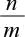
的数，这里的n 和m 都是整数，且m 不等于0。）但是，量子力学却包含并非有理数的概率。因此，基于这种定义，我们不得不认定量子力学是错误的，或者认为这里的概率并不是基于世界的。所有这些结论都来自扶手椅上的思考。中译本边码：96
要想避免上面发现的这些问题，我们可以提出这个要求：基于世界的概率应该和无限集合体进行关联。设想一枚硬币，经过无限多次抛掷，发现只是正面朝上。抛掷这枚硬币得到正面朝上的概率直觉上就是1。我们并不需要担心再抛掷下去会发生什么。
这样的话，为什么不用无限集合体中的相对频率来定义概率呢？从数学的角度讲，有一种有用的极限运算可以被我们利用。为了搞清楚它是怎样运行的，我们来考虑下面这个公式：
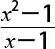
。当x 等于1时，它的值是什么？没有答案，因为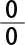
没有被定义（或者是不确定的）。但尽管如此，当x 越来越接近1时，我们仍然可以考虑这个公式的值，如表7.1所示。表7.1
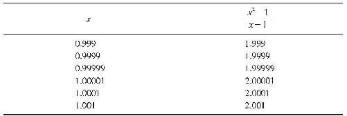
显然，当x 接近1时， 接近2。因此我们说，当x 接近1时， 的极限 是2。而现在我们就有了我们所需要的考虑无限值的工具。作为一个简单而且恰当的例子，可以考虑
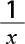
。当x 接近无穷极限时，它的值是多少呢？正如表7.2所表明的，它是0。于是，从数学的角度讲，在无穷极限情况下谈论相对频率是没有问题的。但如果我们只是考虑经验 集合体，那么，用这种方法去定义概率就存在一个明显的问题了。我们可以找到一些 看上去真正属于无限的经验集合体；例如，考虑随着时间段的减小地球的平均运行速度。但是，我们往往在集合体并非无限，而且永远不可能无限的情况下使用概率。而且，我们也许并不想说这些全部都是基于信息的。我们回过头来想一下本章开头所给出的基于世界的观点的动机吧。我们希望能够去谈论赌场当中关于机会的游戏，并解释随着时间的推移，为什么——或者至少是可以预测——这些将会导致赌场积累到一个比赌徒们更高的胜率。但是，这样的机会游戏在数量上是有限的。而且，它们似乎总会是有限的。中译本边码：97
表7.2
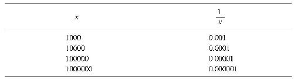
提倡这种概率观的人完全可以去论证，这些游戏将会无限地进行下去。但是，背后潜在的问题是更加深刻的。我们难道确实必须要知道这样的事件是否 会无限进行下去，以便知道我们是否能够通过一种基于世界的方式考虑（并使用）有关它们的概率吗？似乎并不是这样。这样的推测并没有进入赌场主、保险公司的考虑范围。他们只是依赖了关于实际频率的数据，以此便能指导他们的行动。
以下是一个与之相关的顾虑。为什么实际频率总会告诉我们关于极限情况下的频率的什么事情 呢？考虑抛掷硬币的场景。为什么在时间t ，例如在明天之后，所有这些抛掷的结果就不能都变成正面 朝上呢？是什么东西保证了我们当下的数据是相关的呢？敬请期待答案——或者至少请读下去，它在下一部分就会出现。
中译本边码：98
这里还有最后一个问题。有些无限序列并不 具有极限值！哈杰克（Hájek 2009： 220）给出了如下抛掷硬币序列的例子：
HT HHTT HHHHTTTT HHHHHHHHTTTTTTTT ……
这种模式重复下去。接下来将会是16（25 ）个正面和16（25 ）个反面，然后是32（26 ）个正面和32（26 ）个反面，如此等等。因此，正面（或者反面）的相对频率并不随着抛掷次数接近无限而变得稳定。它无休止地上下波动，如表7.3所示。
表7.3
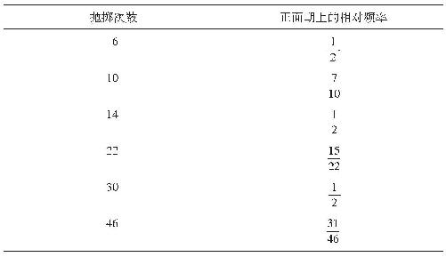
自始至终的最低点都是
，因为有持续性的阶段，在这些阶段上，正面朝上的数量与反面朝上的数量是相等的；但从来都没有这样的点，在这些点上，反面朝上的数量多于正面朝上的数量。这种波动确实
变得有点小了，但随着n
接近无限，高点也只是接近于
。（如果你使用计算器的话，你就能够看到，
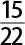
比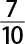
更接近
，而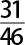
则更加接近。后面的值包括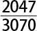
和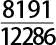
，也是如此。）因此，当我们考虑在无限情况发生了什么时，我们能够得到的结论只不过是：正面朝上的相对频率在
和
之间波动。
这样的话，我们如何知道我们遇到的经验集合体不包含这样的序列，其中的相对频率并没有极限值呢？设想一枚硬币以上面详述的方式着地，似乎并没有什么不相容之处。而且有一点很容易理解：其他这样的序列也是存在的，例如先有3 n 次反面朝上，接下来是3 n 次正面朝上。（实际上，有无限多个其他这样的序列。只要把3替换成你喜欢的别的自然数即可。）
中译本边码：99
我们一开始讨论了经验集合体，考虑了概率是否只是这些经验集合体当中的实际 相对频率。但是，我们发现这个观点无论对有限集合体还是无限集合体来说都是有问题的。一个关键的问题在于，在概率应该出现的地方，它们经常缺席。例如，即使一枚硬币从来没有被抛掷过，它也不可能是公平的，甚至不可能具有正面朝上落地的概率。
解决这个问题有一种简单的方法。那就是去考虑反事实的可能性 ，或者说与事实相反的那些可能性。事实上，在日常生活当中我们经常这样做。我们经常这样说：“如果我上学的时候学习更努力一些，我本来会有更好的成绩！”以及“如果我再忠诚一些，她也就不会和我分手了！”（这两个陈述都是反事实条件句 。它们是“条件句”，是因为它们是“如果……那么……”这种形式的陈述。它们是“反事实的”，是因为“如果”后面的部分，也就是前件，是假的。）我在教训女儿的时候经常使用这样的陈述：“如果你趁自己不太困的时候早点写作业，事情不是会更简单一些嘛！”
请记住冯·米泽斯，一位杰出的数学家（和科学家），他设计出了关于概率的相对频率解释的一个最为详尽的版本。他的一个关键思想是认为，把有限经验集合体塑造 为无限数学集合体是合理的。因此，概率关注的是无限数学 集合体（对它进行的极限操作得到了良好的定义，这在上一部分已经讨论过了）。但是，这些数学集合体必须要和经验集合体具有适当的关系。
初看起来，这个想法好像有点不可思议。但正如第五章讨论主观解释时所提到的，理想化在科学，尤其是物理学中是很常见的。对于这些理想化是否可以表征实际事物，也不存在任何疑问。无穷在许多这样的理想化当中都扮演着特殊的角色。在理想气体当中，分子是无穷 小的点状的东西。在光学当中，镜头通常被认为是无穷 薄的。另外，镜头的焦距是根据它们对位于无穷 远处的对象所创制的图像定义的。
中译本边码：100
冯·米泽斯用了一个来自流体力学的例子来阐明这一点。（这里需要了解微积分，所以我就不探讨它了。如果你对此好奇，那就请你参阅《概率的哲学理论》（Gillies 2000： 102—103），那里有一个解释。）冯·米泽斯断定说：
基于无限集合体概念的一个理论的结果，可以通过一种在逻辑上不可描述但在实践当中却足够精确的方式应用于有限的观察序列。在这种情况下，理论与观察之间的关系与其他所有物理科学当中的关系，在本质上都是一样的。（Von Mises 1928： 85）
这是一个有说服力的观点。因此，让我们接受它（至少暂时接受它）。难道我们先前讨论过的关于“概率应该用经验集合体来定义”的观点所存在的其他 一些困难不是仍旧还会存在吗？例如，我们如何才能知道，通过使用对相对频率具有有限值的 数学集合体去塑造经验集合体是适当的？毕竟我们在前一部分已经看到，我们可以轻而易举地想象其中相对频率并没有有限值的无限数学集合体的存在。回想哈杰克（Hájek 2009： 220）那个抛掷硬币序列的例子：
HT HHTT HHHHTTTT HHHHHHHHTTTTTTTT ……
然而，冯·米泽斯预料到了会有这种形式的反驳。在他看来，根据两个明显的经验性理由 ，可以说明这种反驳是不成功的。具体而言，冯·米泽斯断言，存在两条支配经验集合体的法则，我们可以大致陈述如下：
（1）稳定性法则 。集合体当中属性的相对频率，随着观察的增加而变得越来越稳定。
（2）随机性法则 。集合体包含随机序列，也就是说，它们并不包含关于属性的任何可预测模式。
中译本边码：101
在下一部分我们将详细考察这些（所谓的）法则。
首先让我们来考察稳定性法则。它的基本思想很简单。随着时间的推移，经验集合体当中属性的相对频率的波动会越来越小，并趋近于具体的值。这一点与我们考察过的如下思想是一致的：在无穷远处存在着一个这些频率所趋近的极限 ，这点我们在前面已经提到过。
冯·米泽斯坚持认为，这条法则早已得到了经验的确证。因此，这条法则在16世纪时被一个恰恰也是优秀数学家的执着的赌徒首次提出，这也许绝不是什么巧合。他的名字叫贾德诺（Gerolamo Gardano），他是最早研究概率的人（和17世纪的研究相比，这些当然只是初等研究）。他很可能是根据自己作为一名赌徒所积累的大量经验提出这条法则的。
同样有趣的是，这条法则是在帕斯卡和费马发现概率法则——附录A中解释的加法法则和乘法法则——之前 提出来的。事实上，历史表明，正是因为相信这个法则是真的，推进了他们的进一步研究。回忆一下在第二章讨论过的法国赌徒顾邦德。他并不是只 想知道，当赌博不是（能够）令人满意地结束时该如何分配赌资，他还对为什么在他自己设计的一个游戏当中没能获胜感到十分好奇。介绍一点背景对于理解为什么会这样是必要的。
通过重复赔率均等的赌（也就是赌商为二分之一），赌在四次掷骰子中至少会有一次六点出现，顾邦德赚了不少钱。现在看来，这并没有什么可奇怪的，因为只要假定骰子是公平的，我们就能算出六点出现的概率是多少。对于每次掷骰子，得不到六点的概率是
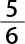
。因此，四次掷骰子连续得不到六点的概率是（ ）4 。因此，至少得到一个六点的概率是1－（ ）4 ，即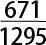
。这个事件中二分之一的赌商是不公平的。中译本边码：102
但后来，顾邦德重复给出了一个更加复杂的赌。（或许他这样做是因为输给他的人逐渐明白了先前提到的那个赌对他有利这个事实。）这个赌指的是：把两个 骰子掷24次，两个六点将至少一起出现一次。他给出的赔率还是一样。
顾邦德有一个错误的理论，让他认为这个新的赌会和他之前的赌一样获利。但他注意到情况不是这样，而且让帕斯卡注意到了这件事。也就是说，他注意到，随着时间的推移，他开始输钱了。然而，让这一点变得引人注目的是，假定骰子是公平的，那么他输掉每一局的概率只比二分之一少那么一点点。这一次我们还是能把它算出来。一次掷出两个骰子得不到两个六点的概率是
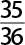
。因此，24次掷出骰子得不到两个六点的概率是（ ）24 。因此，至少得到一次两个六点的概率是1－（ ）24 ，或者大约0.4914。于是，通过重复“实验”顾邦德发现了二分之一与0.4914之间的微小区别。此外，再说一遍，尽管他并不 是一名优秀的数学家，但他却发现了这样一点。不过，他没有办法准确地算出这个值是多少，这就是他去咨询数学家的原因了。现在来看，顾邦德本不会认为他的发现是有趣的，除非他（隐含或者明确地）假定 获胜的相对频率会很快稳定下来，并趋向于一个具体的值。（很难想象在这次游戏中他的全部赌注的数量会高于10000。可能也就约为1000。）费马和帕斯卡似乎也做出了这个假定。这样想吧。要是他们把他的结果看作一件离奇怪诞的事，他们也就没有任何东西可以系统地进行研究了。因此，他们必然正在考察（他们所认为的）一个稳定的值，并且正在试图理解为什么它会小于二分之一。
但稳定性法则确实 是真的吗？基于经验进行论证的方法，通常只是给出大量实验结果的例子。通过网络搜索“相对频率实验”，你可以发现好几个结果。或者你可以做你自己的实验。下面就是我做的一个实验。我掷出一个有十个面的骰子——一个规则的十面体——400次，并记下每掷十次之后得到十点的总次数。（像这样规则的骰子在许多棋牌游戏当中都会用到，包括“龙与地下城”游戏。前面第五章我们也看到了一些其他种类的游戏。）在表7.4中，我列出了一些有趣的数据点，其中会出现相对频率的一些高点和低点。（相对频率发生在三个十进制的地方。）在图7.1中，这一点后面跟着一幅曲线图，这个图表明了相对频率是怎样与掷骰子的次数相关的。
中译本边码：103
表7.4 掷一个规则十面体骰子的关键数据点
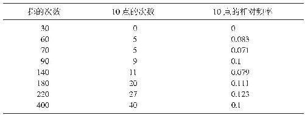
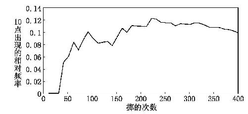
图7.1 掷一个规则十面体骰子出现十点的相对频率
这个实验恰好以0.1这个相对频率结束，这纯属幸运，0.1这个值是我们所期待的在无穷远处的值。如果我继续掷的话，相对频率将会再次发生偏离。（我们当然知道这一点。接下来，我将或者结束于掷401次并且出现40次十点，或者结束于掷401次并且出现41次十点。）但我不会期待相对频率再次低到0.071或者高到0.123。
中译本边码：104
为了从经验上对这个法则进行辩护，除了给出相同种类更多的例子（这会让人感到极为厌烦）之外，没有更多可以补充的了。（我们已经提到了赌场和保险公司等实体所取得的成功。）至少，似乎存在着许多确实 服从这个法则的集合体（就我们所知而言，这些集合体具有我们能够处理的有限的数量）。我们可以使用一些数学证明提供支持——所谓（强的或者弱的）大数字法则 ——但这些都预设了，这些集合体当中的变量序列是随机的 。因此，现在让我们来考察随机性法则。
最好的办法是通过诉诸关于“什么不 是随机的”直觉来引入随机性。这里就有一个清楚的例子。考虑如下硬币抛掷的序列：
HTHTHTHTHTHTHTHTHTHTHTHTHT……
这不是随机的，因为在这些属性当中存在一种固定的模式。而且有一点是明显的 ：它之所以不是随机的，是因为它显然 是有这样一种模式的。随便哪一个称职的赌徒都会赌下一次将会出现正面朝上的结果。再下一次，他就会赌反面朝上，如此等等。他会利用这个序列缺乏随机性的特点——结果存在着固定模式——以便制订一个成功的赌博策略。
这种模式的存在有时候并不那么明显。例如，考虑下面这个硬币抛掷的序列，其中存在固定的模式吗？
T HH T H T H TTT H T H TTT H T H TTT H TTTTT H……
如果你认为不存在这样的模式，那是可以理解的。但实际上这种模式是存在的。正面朝上的结果只出现在位置2、3、5、7、11、13、17、19、23、29上，如此等等。而你现在也许发现了：这些都是素数。因此，如果你打算遵循规则“抛掷数为素数时赌正面朝上，抛掷数为非素数时赌反面朝上”，那么在赌抛掷结果的时候，你将永远不会赌错。
中译本边码：105
关于集合体是随机的这一点的证据是什么呢？考虑会有多少赌徒试图去设计不靠欺骗也能获胜的系统。为了实现这个目的，许多赌徒记下先前游戏的结果，例如记下轮盘赌的旋转结果，以便寻求其中存在的某种模式。实际上，我就看到过赌场中的一些赌徒，他们每天花费相当一部分时间去做这件事。（自然，记下这些结果也能用来确定属性的相对频率。因此，这可以用来发现一个轮盘赌是否由于例如没有被放平而导致结果有所偏倚。这一点人们已经 成功地做到了。但那不是 我们在这里讨论的问题。我们讨论的是，通过放置数字而寻求结果当中存在的模式。）这些赌徒们成功了吗？他们可曾成功地发现为了让自己在赌场上彻底打败庄家而成功加以利用的模式？好像并没有！
这些并不是任何 模式都不 存在的证据。它们只不过是下述这一点的证据：如果这种模式存在，它们极难被觉察出来（基于赌徒们当前能够收集到的数据）。
现在，让我们最后一次回忆哈杰克（Hájek 2009： 220）关于抛掷硬币的那个假想的无穷集合体：
HT HHTT HHHHTTTT HHHHHHHHTTTTTTTT……
现在我们可以看到冯·米泽斯将如何回应基于这一点的任意反驳了。这个集合体不仅违反了稳定性法则，因为在极限情况下它并没有任何频率；而且还违反了随机性法则，因为分别存在H模式和T模式（发现这些模式碰巧是一件简单的事）。但这个回应足够好吗？下面就让我们通过对话的形式，通过考察这一点来批判冯·米泽斯的相对频率观点。
达瑞： 那么，谁来第一个反驳冯·米泽斯？
学生甲： 你可能又要手忙脚乱了！
中译本边码：106
达瑞： 那也比沉默要好。你为什么不第一个来呢？
学生甲： 好吧。考虑实际 有限频率的一个好的方面在于，它们是容易测量的。也就是说，尽管我们看到了认为概率等同于有限经验集合体中的相对频率存在的问题……
达瑞： 你的意思是说，在解决这些问题的过程当中，这个好的方面已经被丢掉了。
学生甲： 是的！丢掉了，或者，至少是变小 了。我这么说吧。考虑所有的硬币抛掷。想象我们已经拥有了关于该集合体的大量数据。比如说，我们已经拥有了今年抛掷所有硬币得到的结果。我们应该确信，这个数据与有关硬币抛掷的这些结果的概率相关吗？
学生乙： 是的，因为经验规律吗？
学生甲： 但是，这只是经验规律罢了。我并不确信它们就是 普遍性规律。或者至少我认为有理由 不相信它们是普遍性规律。首先，也许抛掷硬币的结果在极限情况下并不存在 任何频率。第二，即使在极限情况下存在 一个频率，这个频率或许也和目前我们掌握的数据引导我们去期待的大不相同。第三，也许在抛掷硬币的结果中存在着一种我们不能发现的模式，而这让它成了非随机性的。或许每个第一百万次抛掷的结果都是正面朝上，或者诸如此类。我们根本就没有足够的数据去发现这个模式！
学生乙： 所有这些对于我来说都有点值得怀疑。我的意思是，今天有人可能会朝我开枪，但我并不打算穿一件防弹背心……
学生甲： 好吧，让我用一种稍有不同的方式来进行论证。我们来考虑第三个问题，也就是关于随机性的争论。比如说，你正确地认为我们有证据表明抛掷硬币的结果的序列是 随机的。现在设想在遥远的未来，人们发现了这个序列当中存在的一种模式。你当真 会承认我们之前一直在使用的关于抛掷硬币的概率是错误的，哪怕我们已经足够理性？
学生乙： 我承认，这个观点更好一些。我也不得不怀疑这些法则是完全 普遍的，尽管它们通常 对经验集合体都是适用的。实际上，也许这些法则本质上是或然的 ！
学生丙： 这样想的话，我有一些困扰。如果这些法则只是如此碰巧为真 ，这难道不是很怪异吗？如果它们就是这样的情况，这难道不需要给出某种解释吗？
中译本边码：107
达瑞： 这个问题问得好。事实上，接下来我们想要考虑的概率的解释——倾向性解释——就是试图去解释为什么在有些情况下我们会期待稳定性和随机性。现在我们就不细说了。冯·米泽斯会这样答复你：这些法则是基本的事实，就像物理学当中的能量守恒定律。而且他还会补充说，如果这个世界不存在任何不可解释的特征，我们就需要 一个解释上的无限倒退。
学生丙： 碰巧，对此我有一个回应……
达瑞： 真的？
学生丙： 它依赖于卡尔纳普所提出的经验法则和理论法则之间的区别。经验法则在可观察事物的层面上起作用，而理论法则在不可观察事物的层面上起作用。如今，物理学当中的通常情况是，经验法则可以通过适当的理论法则进行解释 。
达瑞： 给个例子看看？
学生丙： 考虑“所有铁锭在受热时都会膨胀”。存在着一种对于它的解释，是用铁锭的构成成分给出的。另外，关于温度究竟是什么意思，是根据分子的平均速率进行解释的。
达瑞： 很好。这么说，你的想法就是，这些关于集合体的法是关于可观察之物的法则 ，对于这些法则，我们会期望其背后是关于不可观察之物的法则 ，就像我们通常在物理学当中所做的那样吗？
学生丙： 正是如此。因此，冯·米泽斯与物理学的类比并不像初看上去那么好。实际上，他对概率的解释漏掉了一些东西。粗略地说，我想说它只是聚焦于表面上可观察的东西。
达瑞： 但是，有些哲学家对于谈论不可观察的东西有点怀疑——因此，他们可能会把这种“表面性”看成优点。
学生丙： 或许吧。但这些人中的大多数仍然认为，拥有关于不可观察事物的理论是没有问题的。他们只是并不总是 把这些理论当成真的，或者当成是高度似真的。
达瑞： 言之有理。
达瑞： 好吧。让我们把关注的焦点从所谓法则移开吧。关于所谓的“假定式频率主义”还有其他问题吗？
中译本边码：108
学生乙： 我最主要的担心在你引入频率解释的时候已经涉及了，即它没有考虑涉及单个事件的概率——或者说，没有考虑到“聚集现象”（mass phenomena）集合体中个体事物的概率。
达瑞： 但是，你为什么会认为这些是重要的呢？
学生乙： 我举个例子。设想我生病住院了。我病得很严重，医生建议我动手术。我问她手术之后我存活的概率是多少。
达瑞： 她怎么回答的呢？
学生乙： “百分之七十。”但是，因为我知道一点关于概率的解释，所以我就进一步要她解释一下这是什么意思。这只是她的个人看法吗？
达瑞： 她怎么回答的？
学生乙： “这个是基于医学研究的结论。”于是我问：“相关的集合体是哪一个？”或者像我也听到的那种问法：“参照类是哪一个？”
达瑞： 好吧，于是她就跟你讲了讲这项研究的事。也许它涉及一家特定的医院中的二百名病人，这些病人的手术是几个不同的外科医生给做的，而这几个外科医生用的是不同的外科技术，等等。
学生乙： 对！于是我问：“但是，我想知道我 存活下去的概率！”我继续说：“它一定不同于你提供给我的那个概率，因为这是一家不同的医院，你是一个不同的外科医生，而且你会建议使用一种特定的外科技术……”
达瑞： 哈！我已经处在某些相似的情境中了。但是，如果这名医生是一名地道的频率主义者，她一定会回答说，不存在任何基于世界的概率。
学生甲： 情况真的这么坏吗？就算是存在 一个适用于你，也就是那些情形中的患者的概率，我们肯定也不会拥有关于它的恰当的数据吗？为了搞清楚这一点，我们需要多次重复同一个场景——而如果手术是不可逆的，这好像就是不可能的。
中译本边码：109
达瑞： 说得好。但也许存在种类上与此相似的其他事例，在其中我们的确想说存在着一个概率。单个放射性原子，例如一个碳-14原子的情况如何呢？它 有一个在任意时段都在衰变的概率吗？
学生甲： 为什么不只是说“不”呢？正是因为这种类型 的放射性原子具有半衰期，因而当作集合体考虑的时候 ，它具有衰变概率。
达瑞： 我并不是这么有把握。考虑下面这个思想实验。在整个宇宙当中，仅仅产生过一个x 类型的放射性原子。它……
学生甲： 我明白了……
达瑞： 那么，我只想说说这一点。似乎你所处的位置会让你接受如下观点：x 类型的单个原子在某时段内是否衰变，这是由物理规律决定 的。也就是说，这取决于你是否坚持认为不存在任何单独关于它的基于世界的概率。
学生甲： 当然。
学生乙： 但是，我们知道这一点吗？我的意思是，难道我们不愿意让我们在这个世界是否是非决定论的这个问题上保持开放态度吗？
达瑞： 我倾向于赞同你的观点。
到目前为止，上面的对话已经涵盖了单一案例概率的问题。但有一个问题与此相关，被称为参照类 （reference class）问题 ，接下来我们就来谈一谈。
学生丙： 好的。如果我们能继续讨论，我可以提一个不同的反对意见吗？
达瑞： 当然可以。
学生丙： 回到学生乙关于住院的例子上来。我们姑且接受不存在任何个体概率 的观点吧。但是仍然存在着我们要考虑哪一个 集合体的问题。
达瑞： 也许你可以修改一下这个思想实验，把你的想法进一步解释一下？
学生丙： 当然可以。设想这个医生知道关于她想做的这种类型手术的两项 研究，而这两项研究对患者存活的相对频率的报道是不同 的。那么，应该使用哪项研究呢？
中译本边码：110
学生乙： 这就是人们所说的参照类问题 吧？
达瑞： 是的。
学生乙： 我们可以通过让这样的研究以不同的方式和我，也就是患者变得相关，从而让它变得更加有意思。比方说，研究I涉及的患者和我在同一家医院做手术，年龄分布在10岁到80岁之间。研究II涉及的患者和我在不同的医院做手术，但年龄分布在20岁到30岁之间。顺便说一下，我23岁。
学生丙： 很好。这样的话，也许研究I的存活率为百分之五十，而研究II的存活率是百分之七十。要用哪一个呢？
学生甲： 难道就没有一种简单的解决方法吗？难道我们不应该把这些结果结合起来，然后看一看这些研究中的全部 患者存活的相关频率的情况吗？
学生丙： 别那么快下结论。对单独使用研究I，也就是手术在同一家医院做，有一个论证。但是，对单独使用研究II也有一个论证，因为它不包含比我更年轻或者更老的患者。
达瑞： 很好。更愿意依赖一项研究似乎是合理的，尽管说清楚应该更愿意选择哪一项研究是一件困难的事。或许研究II中的医院的医疗水平较低。或许它的卫生状况更差，设备更加陈旧，等等。或许研究I当中一些年龄大的患者由于年龄原因而导致了较低的存活率。
学生甲： 我明白了。实际上，我认为这与单一案例概率的问题是相联系的。
达瑞： 这是一个有意思的想法。道理何在呢？
学生甲： 理想一点说，我们不会想去使用其中任何一项研究，因为这些集合体太宽泛了。我们想使用在同一家医院做手术的研究。我们希望病人年龄就像研究II中那样分布。希望病人的性别也和研究II中那样相同。希望和研究II中具有相同的病史。和研究II中具有相同的DNA……因此，实际上，我们想要的是研究II！
达瑞： 确实……
学生乙： 即使我们认同我们不可能这样做，我们也并不总是会有一种可靠的方法去判断使用两个集合体中的哪一个更好。
达瑞： 对。其中一个原因是，相似性 尚在判定当中。举例来说，不妨设想一个钢球和一个木制锥体，哪一个和木球更相似呢？如果回答这是一个语境问题，貌似有理。如果我们考虑构成、柔韧性或者导热性，那么我会把木制品进行配对。可如果我们考虑形状、表面积到体积比，或者是滚动的倾向，我就会把球状物进行配对。
中译本边码：111
我们已经考察了针对假定式频率主义的两种主要的反对意见，并且看到了他们在某种程度上是相互关联的。但是，还有最后一种异议需要论及，该反驳是哈杰克（Hájek 2009）提出的。他称之为参照序列 （reference sequence）问题 。
它的基本思想是，在一个无限集合体当中，一种属性在极限情况下的频率依赖于该集合体当中成员的次序 。为了搞清楚这一点是什么意思，请设想两个具有相同成员的无限集合体，也就是所有的自然数。第一个集合体按照正常数数的顺序排列：1、2、3、4、5，等等。但第二个集合体按照相当不同的方式排列：1、3、2、5、7、4、11、6，等等。现在考虑偶数的相对频率。在第一个集合体当中它是二分之一，在第二个集合体当中它是三分之一。
有一种回应坚持认为，只有一种排序策略是“自然的”。但即使是在我们处理像抛掷硬币这样的简单事件时，这也是不合理的。对于抛掷硬币来说，这种“自然的”次序是时间性的；如果抛掷a 发生在抛掷b 之前，那么在该序列当中抛掷a 所得的结果就应该早于抛掷b 所得的结果，反之亦然。然而根据狭义相对论，a 是否发生在b 之前，是一个角度问题，即测量的参照框架问题。因此，在一个参照框架当中，a 发生在b 之前；在另一个参照框架当中，b 发生在a 之前；在第三个参照框架当中，a 与b 同时发生。这导致了奇怪的情境：对于某个硬币的抛掷来说，出现“正面”的相对频率对两个观察者来说可能就是不一样的。
但是，如果诉诸随机性，情况又会怎么样呢？（上述自然数序列的例子不是随机的。）这样产生的问题是，同一个事件集合对于一名观察者来说是随机的，而对另一名观察者来说却不是随机的。（例如，设想一名观察者随机改变速度，并且经常以极高的速度移动。）那么，我们要说什么呢？这个结论高度反直观：存在着涉及那些对一个观察者来说是这样，而对另一个观察者来说不是这样的事件的概率。更准确一些，我想说的是，如果实际上的确存在基于世界的概率，那就会存在独立于观察者的 基于世界的概率。
中译本边码：112
在频率解释的背后，显然有某种好的动机；它把概率理论建基于主体间可以观察的现象，也就是频率之上。然而正如我们已经看到的，想要为概率只不过就是实际 频率的观点进行辩护，是一件很难的事。因此，当实际频率变成概率的可错标志 ，例如极限情况下的频率或者假定式频率，而不是概率本身，就要被迫做出一些改变了。一言以蔽之，我们可以说，把注意力集中于以实际频率作为对 基于世界的概率的唯一经验证据是正确的。但是，即使把它们解释为假定式的，我们也可能会严重地怀疑频率就是 概率。我们也可能会质疑坚持下面这个观点有什么价值：如果基于世界的概率不能被解释为实际概率，它们就必须被解释为非实际频率。毕竟，非实际频率不 是可以直接测量的。这是下一章的主题了。
推荐读物
尽管频率解释在哲学之外——例如在统计学家当中很流行，但它并不是很多热点研究的主题。我们已经考虑了来自近些年来关键的批判性论文当中的一些论证，也就是《“米泽斯还原”——还原：反对有限频率主义的十五个论证》（Hájek 1997）和《反对假定式频率主义的十五个论证》（Hájek 2009），它们在难度上处于中到高级水平。更容易把握的研讨出现在《概率和归纳逻辑》（Kyburg 1970：第4章）和《概率的哲学理论》（Gillies 2000：第5章）当中。《概率、统计和真理》（Von Mises 1928）很容易理解，并且值得多次阅读。